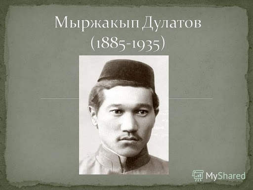

На первом все казахском съезде казахская делегация приняла решение о создание партии «АЛАШ». Съезд поручил избранным представителям «Шуро-и-ислам» (Всероссийский мусульманский совет-авт.) разработать политическую программу партии. Его основа должна состоять из требования создать демократическую федеративную парламентскую республику. Лидером партии «АЛАШ» стал признанный делегат казахской интеллигенции Алихан Букейханов. В нем также состояли яркие умы нашей интеллигенции: поэт, ученый-лингвист и переводчик - Ахмет Байтурсынов; поэт и писатель - Миржакип Дулатов; историк, философ, композитор и поэт - Шакарим Кудайбердиев и другие. Они не воспринимали идеологию большевиков, основанную на классовом принципе, так как казахское общество не было готово к таким изменениям. Поэтому они объединились под общим лозунгом «Освобождение казахского народа из-под колониального ига!».
Власть партии с каждым днем нарастала по территории Казахстана и ширилась поддержка масс, включая и тружеников аула.
ПРОЕКТ ПРОГРАММЫ АЛАШ1. Форма государства
Россия будет демократической, федеративной республикой. Во главе будет президент, которого избирают по желанию. Депутаты будут избираться на всеобщих, равных, прямых и тайных выборах. В выборах не будет дискриминации в религии и в поле. Все законы, надзирательство над правительством и в расследованиях дел будет заниматься Государственная Дума.
2. Свобода на местеПартия «АЛАШ» сторонники справедливости, спутники бедняков и враги притеснителей. Готовы использовать все силы и мощь на благие цели и направит народ на правильный путь. Их цель, чтобы казахские органы были полезны и искренно всей душой служили народу.
3. Основные праваЛюди будут равными независимо от религии и происхождения пола. Они имеют право в свободе: собрания, создания организаций, слова и выпуска газет. Государственные служащие не в праве задерживать без законных прав, входить в чье-либо жилище и без судебного рассмотрения лишать свободы.
А за вскрытие чужого письма – штраф, за чтение – наказание.
4. Религиозное делоСвобода религии. Все религии между собой должны быть равны. А также государственное дело должно быть отделено от религиозного. У казахов должно быть самостоятельное муфтийство. У муллы будут рассматриваться: брак, развод, похороны и наречение ребенка, а у суда спор о вдове.
5. Правосудие и судПравосудие и суд будут учреждаться на основе жизни каждого народа. Каждый бий и судья обязан знать язык местного населения. Если заседание происходит со смешанным населением, то суд пройдет на языке большинства. Перед правосудием и судом каждый человек равен. Они обязуются подчиняться воле суда и биев, так как после Бога всесильными являются они. В степи, аулах и волостях правосудие осуществляются на основе правил ереже.
6. Защита страныМолодые люди должны обучаться на месте проживания и там же служить. Воинские обязанности казахи будут выполнять в конной милиции.
7. НалогСумма налога будет основана на доходе человека справедливым путем.
8. РабочиеНа казахской земле заводов и фабрик мало. Поэтому партия одобряет сторону социал-демократов в рабочем вопросе. Каждый рабочий под защитой закона.
9. Наука, обучение знаниюОбучение будет происходить на бесплатной основе и доступным будут каждому человеку. Откроются школы и университеты на своем языке. Учителя, профессоры будут набираться путем самовыборов. А также будут открыты библиотеки.
10. Земельный вопросПартия требует вернуть землю казахам, чтобы они смогли обустроиться. Не должна быть речь о продаже земли, так как каждый должен пользоваться сам. А неиспользуемые земли должны передаваться земствам. Подземные богатства, большие лесные массивы, крупные реки будут государственные, а небольшие леса и богатства озер станут имуществом земства.
Разработчики проекта:Алихан Букейханов, Ахмет Байтурсынов, Миржакип Дулатов, Елдес Гумаров, Есенгали Тормухамедов, Габдулхамид Жундибаев, Газымбек Биримжанов.



«Уш жуз»-партия радикально, пробольшевистски настроенных слоев населения. Эта партия сумела распространить свое влияние главным образом в северо-восточных областях Казахстана. ЦК находился в Омске. Основателем ее был Мукан Айтпенов. Но деятельность «Уш жуз» связана, прежде всего, с именем Колбая Тогусова. В марте 1919 года Колбай Тугусов был расстрелян как советский деятель. Лишившись лидера, партия «Уш жуз» прекратила.
Стремление партии «Уш-жуз» связать идеи «мусульманского братства», «единение тюрко-татарских детей» с развивающимся революционным процессом на восточных окраинах страны после победы Октября можно объяснить особенностями психологии мусульманских крестьянских масс, тем, что народы отсталых национальных окраин не могли сразу освободиться от пут средневековых религиозных представлений. Кроме того, в Казахстане и Средней Азии накануне Октября было мало большевистских организаций, подавляющее большинство казахского народа было неграмотным, а образованные в основном были из среды имущих классов, влияние буржуазных националистов и мулл на трудящиеся массы было еше сильным. Все это отразилось на содержании идейно-политической деятельности партии «Уш-жуз».
Непоследовательность, расплывчатость программы партии «Уш-жуз» была обусловлена еще и тем, что ее руководство в первый период состояло из буржуазных и полупролетарских элементов. Председателем партии сначала был избран М. А.Айтпенов, стоящий ближе к буржуазно-националистической позиции. Поэтому партии «Уш-жуз» в то время (ноябрь—декабрь 1917 г.) были свойственны резкие колебания, путанные и противоречивые решения, отдельные срывы, носившие панисламистский и националистический характер, отражавшие настроение оказавшихся в партии различных социальных групп, или, как пишет Григорьев В. К.,—«проявления мелкобуржуазного характера партии, действовавшей в условиях отсталой национальной окраины.
Изучая историю партии «Уш-жуз» и ее участие в идейно-политической борьбе за победу советского строя в Казахстане, мы изучаем одну из важных сторон гибкой тактики большевистской партии по привлечению на сторону пролетариата революционно-демократической части мелкой буржуазии как резерва социалистической революции.

«Шуро-и-исламия» - организация исламизма и тюркизма. Причем исламисты стояли на позициях «чистого ислама», а сторонники тюркизма отличались модернизмом и прагматизмом. Это привело к тому, что «Шуро-и-Исламия» первоначально объединяла эти два направления. Но через три месяца после своего образования в июне 1917года от нее отделилась организацияя «чистого ислама Шуро-и-Улема». Улемисты во главе со своим лидером адвокатом С. Лапиным стояли на позициях «осуществления законных прав мусульман на самоопределение, построенных на чисто мусульманских принципах и началах шариата.» После Октябрьской революции 1917 «Ш.-и-И.» начала борьбу против Советской власти: лидеры шураисламистов были в числе организаторов и руководителей контрреволюционной «Кокандской автономии». В конце 1917 — 1-й половине 1918 СНК Туркестанской республики и местными Советами все организации «Ш.-и-И.» были распущены за антисоветскую деятельность. Уйдя в подполье, руководители «Ш.-и-И.» в союзе с русскими белогвардейцами, улемистами и иностранными империалистами продолжали борьбу против Советской власти.

«Шура-и-Улема» (араб. — «Совет духовенства»), контрреволюционная панисламистская организация в Туркестане в 1917—18. Выделилась в июне 1917 из организации «Шура-и-Ислам». Объединяла высшее мусульманское духовенство, местных феодалов и наиболее реакционную часть национальной буржуазии. На съезде «Ш.-и-У.» в Ташкенте 17— 20 сентября 1917 делегаты выступили против Советов, требовали отделения Туркестана от России и объединения всех мусульман в единое мусульманское государство под эгидой Турции, создания во всех городах Туркестанского края отделений «Ш.-и-У.». На 3-м съезде Советов края (ноябрь 1917) улемисты выступили против установления в Туркестане Советской власти, были в числе организаторов контрреволюционной «Кокандской автономии» и вдохновителями басмачества. В борьбе против Советской власти улемисты выступали в союзе с русскими белогвардейцами и иностранными империалистами.

БОЛЬШЕВИКИ́, фракция наряду с меньшевиками в составе Российской социал-демократической рабочей партии (РСДРП); затем политич. партия. Назв. «Б.» (первоначально – «большинство») отразило итоги выборов руководящих органов РСДРП на её 2-м съезде (1903). В. И. Ленин считал 1903 временем возникновения большевизма «как течения политической мысли и как политической партии», однако его работы, составившие идейную основу большевизма (прежде всего «Что делать?», 1902), появились ранее. Вопреки принятому в то время среди рос. социал-демократов мнению, приоритетное место среди взаимодействовавших в обществе сил Б. отводили субъективному фактору, гл. обр. пролетарской партии – «авангарду рабочего класса». Б. продолжили радикальное направление в рос. революц. движении: оставаясь на почве марксизма, большевизм в то же время вобрал в себя элементы идеологии и практики революционеров 2-й пол. 19 в. (Н. Г. Чернышевского, П. Н. Ткачёва, С. Г. Нечаева). Б. использовали (следуя идеям К. Каутского и Г. В. Плеханова) опыт Французской революции 18 в., прежде всего периода якобинской диктатуры (В. И. Ленин противопоставлял Б.-«якобинцев» меньшевикам-«жирондистам»). В период становления большевизма особая позиция Б. проявлялась гл. обр. в дискуссиях по организационному вопросу. На 2-м съезде РСДРП Ленин предложил считать условием членства в партии личное участие в работе одной из парт. организаций. В основе позиции Ленина лежала концепция партии как нелегальной централизованной организации проф. революционеров, пригодной для конспиративной деятельности и захвата власти. Ей соответствовал исключит. авторитет Ленина – лидера и гл. идеолога Б. Состав руководства Б. менялся, первоначально в ближайшее окружение В. И. Ленина входили А. А. Богданов, В. В. Воровский, Г. М. Кржижановский, Л. Б. Красин, А. В. Луначарский, М. С. Ольминский и др.; почти все они в разное время объявлялись недостаточно последовательными Б. или «примиренцами»
В кон. 1904 Б. приступили к изданию своей первой фракционной газ. «Вперёд» (противостояла ставшей в 1903 меньшевистской газ. «Искра») и создали фракционный центр – Бюро комитетов большинства. В начавшейся Революции 1905–07, по мнению Б., место гл. движущей силы принадлежало пролетариату, который противостоял как самодержавию, так и «либеральной буржуазии»; его победа позволила бы полностью осуществить программу-минимум РСДРП и перейти к социалистич. революции. Практич. выводами из этого стали поддержка Б. крестьянских требований конфискации всех помещичьих, казённых и монастырских земель (что означало отказ от программного положения РСДРП о возвращении крестьянам только «отрезков»), военно-технич. подготовка восстания, курс на установление «диктатуры пролетариата и крестьянства». В период подъёма революции Б. действовали совместно с социалистов-революционеров партией, меньшевиками и др. революц. организациями, применявшими насильственные методы борьбы, в т. ч. при подготовке и проведении Декабрьских вооружённых восстаний 1905. Рассчитывая на вооруж. свержение самодержавия, Б. бойкотировали выборы в 1-ю Гос. думу. В 1907–10 фракционным руководящим органом являлся Большевистский центр (состоял из членов расширенной редакции фракционной газ. «Пролетарий»). В 1907 Б. признали ошибочность бойкота Гос. думы, придерживались тактики «левого блока» на выборах во 2-ю Гос. думу.

Конституционно-демократическая партия, или Партия народной свободы (второе название), представляла левый фланг российского либерализма. Кадетов еще уважительно называли «профессорской партией», имея в виду высокий образовательный и культурный уровень рядовых членов и созвездие имен в руководстве партии. Конституционные демократы предложили России проверенные конституционные решения и либеральные ценности, давно привившиеся в парламентских государствах. Однако эти ценности и идеалы оказались невостребованными, что явилось трагедией российского либерализма, основные этапы создания партии кадетов.
Основные этапы создания партии кадетовЯдром будущей партии кадетов стали две полулегальные организации: Союз земцев-конституционалистов и Союз Освобождения. Обе организации появились в 1903 г. «Союз земцев-конституционалистов» был создан либеральными земскими деятелями для подготовки согласованных выступлений сторонников конституции на земских съездах. Показательно, что главную роль в этом нелегальном и явно оппозиционном союзе играли люди, принадлежавшие к высшей аристократии - князь Д.И. Шаховской и два брата князья Петр и Павел Долгоруковы, рюриковичи по происхождению, одни из самых богатых землевладельцев России.
«Союз Освобождение» получил название по журналу «Освобождение», издававшемуся в Штутгарде под редакцией П.Б. Струве. Учредителями союза стали два десятка земских деятелей и либеральных интеллигентов, собравшихся под видом туристической группы, осматривавшей красоты Боденского озера в Швейцарии. Среди руководителей союза собрался цвет дворянского либерализма: камер-юнкера и камергеры с прогрессивными взглядами. Но наряду с ними в Союзе был представлен демократический элемент, чьи убеждения отдавали левизной, - недаром при создании «Союза Освобождение» его председатель И.И. Петрункевич произнес характерную фразу: «У нас нет врагов слева». Это были люди, прошедшие подполье, тюрьмы и ссылку. Заместителем председателя Союза стал Н.Ф. Анненский, шурин русского бланкиста П.Н. Ткачева, свидетель на процессе нечаевцев и подозреваемый по делу о покушении на цареубийство. Еще одним освобождением был С.Н. Булгаков, сын священника, под влиянием материалистических идей бросивший духовную семинарию и порвавший с православием, чтобы ровно через тридцать лет принять сан священника.
Благодаря левым элементам «Союз Освобождение» действовал решительно и напористо. На втором съезде Союза в ноябре 1904 г. было решено начать банкетную кампанию. Формальным поводом стала юбилейная дата: празднование сорокалетия судебной реформы, самой либеральной и последовательной из всех реформ 60-х гг. XIX в. На деле банкетная кампания должна была сыграть роль катализатора оппозиционных настроений. По решению «Союза Освобождение» также велась агитация за создание союзов либеральных профессий, что позволяло обойти запрет на существование политических партий. В короткое время в России возникло более десятка союзов: академический, писателей, инженеров, адвокатов, учителей, врачей, агрономов, статистиков. В канун Кровавого воскресенья 9 января 1905 г. освобожденцы в спешном порядке сформировали единый координирующий центр - Союз Союзов. События, последовавшие за расстрелом мирной демонстрации в Петербурге, поставили на повестку дня вопрос о создании политической партии, которая сплотила бы либералов.

Партия эсеров сложилась окончательно в 1903 году на базе различных групп, исторически и традиционно считавших себя последователями народничества. Ее программа, принятая на I съезде в 1906 году, прокламировала «социализацию земли»: конфискацию всей частной собственности на землю и передачу ее через волостные и уездные местные крестьянские съезды всем трудящимся крестьянам по установленной местной норме, исходя из количества едоков в семье. Основой для земельной программы эсеров оставалась крестьянская община с ее переделяемыми наделами. Программа эсеров, если оставить в стороне их муниципальные проекты, передавала фактически все частные земли в общину, предусматривая так же, как это и практиковалось в ней, регулярный передел наделов.
В условиях быстро развивающейся повсюду в XX веке промышленности, в условиях перспективы неизбежного роста не только сельского, но и особенно городского населения, в программе эсеров нельзя не усмотреть как утопичности, так и демагогического расчета на стихийный взрыв в деревне, нельзя не увидеть стремления закрыть глаза на продовольственную проблему в России в течение ближайших 20-30 лет.
Программа эта лишала крестьянство возможности развивать на вечно переделяемом небольшом наделе культурное интенсивное хозяйство, способное обеспечить город необходимым продовольствием. Программа эсеров, в дальней перспективе, лишала Россию возможности продолжать индустриализацию и не могла не усугубить общей отсталости страны.
Интересно отметить, что время принятия этой программы, смотревшей назад, почти совпало с истинно прогрессивной столыпинской реформой, которая разрушала общину и делала ставку на отдельные, частные крестьянские хозяйства. Но именно в духе эсеровской программы «социализации» был позже составлен ленинский «Декрет о земле».
В остальных вопросах программа эсеров мало чем отличалась от программ других левых партий. Эсеры признавали право народов России на государственное отделение после революции, но в то же время переносили этот и другие вопросы на решение будущего Учредительного собрания.
Самым спорным на съезде эсеров 1906 года оказался вопрос о признании необходимости «революционной диктатуры» после революции. Незначительным большинством съезд признал «революционную диктатуру» необходимой на время проведения основ программы, после чего должен был совершиться переход к нормальному правовому режиму.
Это положение, вместе с признанием террора, как «временного», средства для достижения целей, вызвал в самой партии эсеров значительные расхождения, полностью вскрывшиеся в 1917 году.
Если правые эсеры Авксентьев, Гоц, Савинков, Зензинов все больше склонялись к правовой государственности, как к исходной базе для проведения своей программы на основе демократически избранного парламентского большинства, то левые эсеры – Натансон, Спиридонова, Камков, Карелин и др., стремились к «революционной диктатуре». В этом вопросе левые эсеры сближались с большевиками. Корни этого сближения лежат в природе как ленинизма, так и левых эсеров, выросших на традициях того крайнего народнического крыла, которое ярче всего представлял Ткачев.